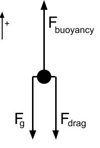

1D Atmospheric Flight Model
A simple, one-dimensional flight model is used to predict the HAB’s flight profile in the vertical axis, including altitude, ascent rate, and ascent accelerations.
1976 COESA Atmosphere Model
The atmosphere model is an implementation of the 1976 COESA Atmosphere Model, used in Simulink as the COESA block from MATLAB’s Aerospace Toolbox or the Python package Ambiance. Both methods approximate atmospheric temperature, pressure, and density using a piecewise curve fit for the layers of the atmosphere based on this standard model.
Limitations
There are significant limitations to this atmosphere model, but it does well enough for us to get by.
- The model is not a function of humidity.
- The model does not account for differences due to the geographic location of the launch site such as latitude or local geography.
- The model does not account for local weather conditions, convection currents, disturbances, or wind currents.
- The layers of the atmosphere are modeled as discrete zones with discontinuities at fixed boundaries but the real layers of the atmosphere are continuous.
Our approach to modeling the balloon’s flight is an approximation anyway, and most of these limitations require more precision than a vertical-axis flight prediction would reasonably provide. We can still use this atmosphere model to understand the overarching forces that dominate the flight’s ascent rate and altitude over time, accepting variations as noise.
For more advanced applications that directly depend on atmospheric conditions such as altitude control, we need to design a system that can compensate for variations. By injecting random noise or random variations into the model’s outputs, we can approximate the system’s performance in response to changing weather or disturbances like convection.
Balloon Flight Model
Assumptions & Simplifications
For this flight model, we are primarily interested in how the HAB changes altitude with time. Eventually, we might consider modeling the 3D flight path over time but for now, we’ll table that for the future. By only considering the vertical axis we don’t have to worry about the geographic location of the launch site as much, we can ignore lateral wind currents, and we reduce the coordinate frame from 3 axes to one axis. In short, the math gets a lot easier and there are much fewer variables to worry about.
| Assumption | Justification |
|---|---|
| We draw the control volume around the whole system (balloon, parachute, and payload) so that we are left with a point mass that reacts to atmospheric conditions. | We ignore interactions between the balloon and the payload through the tether and treat it as a blob that has lighter-than-air gas in it and a bunch of dead weight. Rotating doesn’t change the behavior of the blob, and the blob is too small to have differential effects from its size. |
| We constrain the model to only the vertical axis, ignoring any lateral or rotational forces. | This greatly simplifies our problem, distilling the system into a set of directly opposing forces in the vertical axis. |
| We assume that the lift gas in the balloon is always at the same temperature and pressure as ambient air. | Our model is not precise enough to account for thermodynamic effects caused by the balloon material, and at steady state the gas in the balloon will equalize to be close enough to ambient temperature and pressure that it’s not worth taking into account. |
| Drag only acts on the projected surface area from above looking down. Assume the balloon inflates as a sphere. | We don't need to account for complicated aerodynamics. The size of the balloon is much larger than the size of the payload, so we can ignore the effects of drag on anything other than the balloon. When the balloon inflates it is not quite a sphere, but the true geometry is not close enough to account for differences. |
| The lift gas behaves as an ideal gas. | It's not worth the time or complexity to implement gas properties more in-depth than the Ideal Gas Law. |
Forces at Play
Buoyancy
The buoyancy force comes from the difference in densities between the gas in the balloon and the volume of atmosphere it displaces. The balloon’s volume This force accounts for the weight of the lift gas.
buoyancy_force = balloon_volume * (lift_gas_density - air_density) * gravity
Remember that gravity is a negative (downward) acceleration. We arrange the subtraction between densities so that the buoyancy force is positive (upward).
Weight
Aside from the lift gas, the only force acting on the rest of the mass in our control volume is from gravity. Since the HAB flies at altitudes in excess of 30 km, we must account for changes in gravity with respect to altitude.
standard_gravity = 9.80665 # [m/s^2]
earth_mean_radius = 6.3781e6 # [m]
gravity = standard_gravity * (earth_mean_radius / (earth_mean_radius + altitude))**2
weight = gravity * (balloon_mass + payload_mass)
Drag
Even though the buoyancy force is constantly greater than weight for the balloon to rise, the balloon does not accelerate constantly because there is drag from the air acting against the surface of the balloon. Drag always opposes the direction of motion.
The volume (and therefore windward area) of the balloon changes with altitude. We assume the shape stays the same though, so the coefficient of drag does not change.
balloon_radius = (balloon_volume * 3 / (4 * PI)) ** (1/3)
windward_area = PI * (balloon_radius) ** 2
drag_force = 1/2 * (ascent_rate ** 2) * atmospheric_density * drag_coefficient * windward_area
Sum of Forces / Net Force

The net force on the balloon-payload system is the sum of three primary forces: buoyancy, weight, and drag.
| Force | as a function of | Rationale |
|---|---|---|
| Buoyancy | mass of lift gas in the balloon, altitude | Buoyancy is a function of the amount of lift gas in the balloon and the temperature, pressure, and density of the atmosphere. Using the COESA Atmosphere Model, temperature, pressure, and density of air are all functions of altitude only, so we can reduce the buoyancy force to be only a function of altitude. |
| Drag | mass of lift gas in the balloon, altitude, ascent rate | Drag is a function of the windward area and velocity. Following the ideal gas law, the windward area can be derived from the volume of the balloon, and therefore from the amount of lift gas in the balloon and atmospheric conditions at a given temperature. |
| Weight | mass of everything other than lift gas, altitude | The buoyancy force accounts for the mass of the lift gas, but the effect of gravity on every other part of the system still needs to be taken into account. The acceleration due to gravity changes as slightly as a function of altitude. Weight can be further divided up into which component is measured, like balloon mass, payload bus mass, payload electronics mass, et cetera. |
Free Lift
Free Lift is an alternative way to measure the lift from the balloon and is a handy way to make sure the balloon is filled to the right level or to calculate the ascent rate and other things with the HABHub Burst Calculator. Free lift measures the net amount of lift provided by the helium in units of kilograms. I like to think of free lift as being what a fish scale would read if you attached it to the payload and filled up the balloon. Effectively this is a measure of net force without the acceleration term.
Balloon Parameters
Parameters like the coefficient of drag and balloon mass are obtained from the balloon spec sheet from the manufacturer. If the volume of the lift gas exceeds the max volume listed in the spec sheet or the internal pressure exceeds the max listed pressure, we assume the balloon will burst. Likewise, the manufacturer provides a recommended Free Lift value for a given payload mass, which is used to calculate things like estimated max altitude.
We use Kaymont high altitude balloons as a reference for balloon parameters.